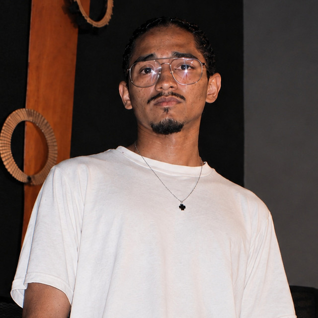

Treboll
bass · dubstep · dnb ·
📍 Caracas, Venezuela
Treboll es un productor y DJ venezolano emergente dentro de la escena de la música electrónica contemporánea. Su propuesta sonora se caracteriza por una fusión dinámica de Dubstep, House y matices del Uk Bass y DNB diseñados para el impacto en pista.
A lo largo de su trayectoria, Treboll ha destacado por su capacidad de colaboración dentro del circuito independiente, trabajando de la mano con diversos creadores y sellos de la industria regional. Entre sus lanzamientos colaborativos más notables se encuentran sencillos como "SMNNV" (junto a Luis Piña, Durai y Destro5) y "Ascent" (en colaboración con De La Trinidad y Destro5), este último editado bajo el sello discográfico Urban House. Con un enfoque centrado en la innovación rítmica y la energía de sus composiciones, Treboll continúa consolidando su presencia en la nueva ola de productores que impulsan el desarrollo y la evolución de la música electrónica en la región.